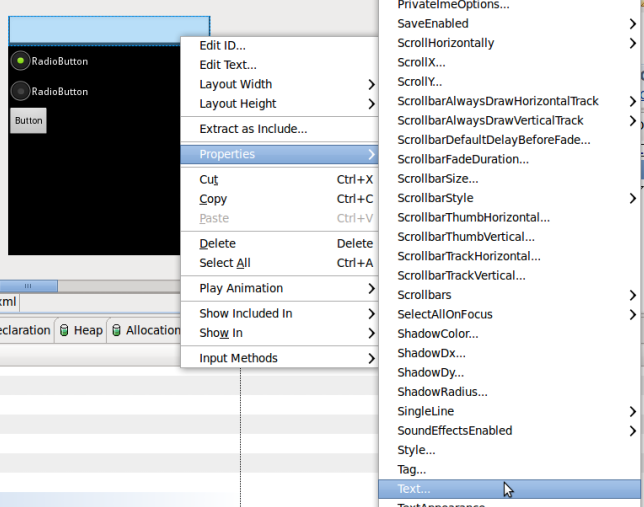
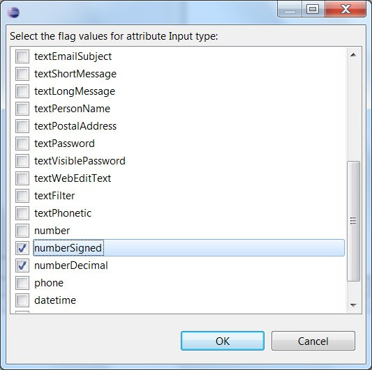
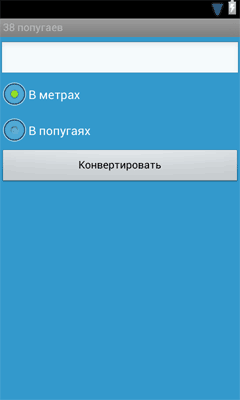
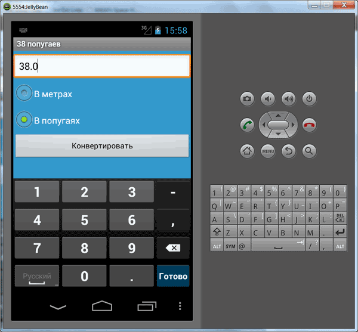
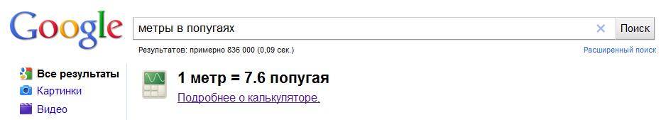

/* Моя кошка замечательно разбирается в программировании. Стоит мне объяснить проблему ей - и все становится ясно. */
John Robbins, Debugging Applications, Microsoft Press, 2000

/* Моя кошка замечательно разбирается в программировании. Стоит мне объяснить проблему ей - и все становится ясно. */
John Robbins, Debugging Applications, Microsoft Press, 2000
Пора опять написать какое-нибудь новое полезное приложение (напоминаю, что до этого мы написали хорошую программу Счётчик ворон). На этот раз напишем конвертер, который позволит нам узнать длину длиннокота не только в метрах, но и в попугаях. Если вы не знаете, кто такой длиннокот, то вам прямая дорога на мой блог Субкота-5. Надеюсь, что такое субкота, вы знаете?
Изучив данную технику, вы сможете написать собственные конвертеры. Например, вы сможете конвертировать доллары в тугрики, футы в метры, градусы Цельсия в градусы по Фаренгейту, свинец в золото, ну и так далее...
Создаём новый проект Converter38Parrots и добавляем необходимые ресурсы.
<?xml version="1.0" encoding="utf-8"?>
<resources>
<string name="app_name">38 попугаев</string>
<string name="radiobutton_meters">В метрах</string>
<string name="radiobutton_parrots">В попугаях</string>
<string name="buttonConvert_text">Конвертировать</string>
<string name="buttonConvertHandler">buttonConvert_Click</string>
<color name="activity_color">#3399cc</color>
</resources>
Далее открываем файл activity_main.xml в папке res/layout/ и настраиваем внешний вид экрана приложения. Удаляем глупую надпись Hello World! (щелкаем правой кнопкой и выбираем Delete). Далее с панели инструментов из раздела Text Fields перетаскиваем элемент Plain Text. Затем в разделе Form Widgets находим элемент RadioGroup и также перетаскиваем на форму. По умолчанию, RadioGroup содержит три переключателя. Как гласит народная мудрость: Третий - лишний. Удаляем третий переключатель другим способом - на панели Outline выделяем нужный элемент и удаляем через контекстное меню. Обратили внимание, как повышается ваш уровень? Вы всё лучше и лучше ориентируетесь в среде разработки. Завершающий штрих - добавляем кнопку.
Мы подготовили каркас приложения. Теперь сделаем небольшой тюнинг. Назначим необходимые свойства добавленным элементам. Свойства можно менять через отдельную панель Properties, а также часть свойств можно изменить через контекстное меню элемента.

Первым делом удалим текст у EditText (свойство Text). Кроме того, давайте сделаем так, чтобы при вводе текста в текстовом поле по умолчанию появлялась цифровая клавиатура. Так удобнее будет пользователю вводить длину кота.

Далее присвоим текст переключателям RadioButton. Мы заранее уже заготовили строковые ресурсы для переключателей. Поэтому нам нужно просто назначить нужные ресурсы в свойствах Text: radiobutton_meters и radiobutton_parrots. Убедитесь, что у первого переключателя у свойства Checked установлено значение true.
У кнопки для свойства Text мы используем строковый ресурс buttonConvert_text, а для свойства On click - buttonConvert_Click. Также можно растянуть кноппку по ширине экрана (Layout width = fill_parent).
Чтобы приложение не выглядело мрачным, присвоим свойству Background у LinearLayout значение activity_color (цвет морской волны).
Чтобы приложение выглядело профессиональнее, изменим также идентификаторы по умолчанию на более понятные: editText, radioMeter, radioParrot, buttonConvert.
Пожалуй, получилось красиво.

Код разметки выглядит следующим образом:
<?xml version="1.0" encoding="utf-8"?>
<LinearLayout xmlns:android="http://schemas.android.com/apk/res/android"
android:layout_width="fill_parent"
android:layout_height="fill_parent"
android:background="@color/activity_color"
android:orientation="vertical" >
<EditText
android:id="@+id/editText"
android:layout_width="match_parent"
android:layout_height="wrap_content"
android:layout_marginTop="5dp"
android:inputType="numberSigned|numberDecimal" >
</EditText>
<RadioGroup
android:id="@+id/radioGroup1"
android:layout_width="match_parent"
android:layout_height="wrap_content" >
<RadioButton
android:id="@+id/radioMeter"
android:layout_width="wrap_content"
android:layout_height="wrap_content"
android:checked="true"
android:text="@string/radiobutton_meters" >
</RadioButton>
<RadioButton
android:id="@+id/radioParrot"
android:layout_width="wrap_content"
android:layout_height="wrap_content"
android:text="@string/radiobutton_parrots" >
</RadioButton>
</RadioGroup>
<Button
android:id="@+id/buttonConvert"
android:layout_width="fill_parent"
android:layout_height="wrap_content"
android:onClick="@string/buttonConvertHandler"
android:text="@string/buttonConvert_text" >
</Button>
</LinearLayout>
Ну, давайте писать код, что-ли. Открываем файл Converter.java. Нам понадобятся два метода для конвертации величин и обработчик щелчка кнопки. При пустом значении текстового поля будем выводить Toast-сообщение:
package ru.alexanderklimov.converter;
import android.app.Activity;
import android.os.Bundle;
import android.view.View;
import android.widget.EditText;
import android.widget.RadioButton;
import android.widget.Toast;
public class Converter extends Activity {
private EditText textInfo;
/** Called when the activity is first created. */
@Override
public void onCreate(Bundle savedInstanceState) {
super.onCreate(savedInstanceState);
setContentView(R.layout.main);
textInfo = (EditText) findViewById(R.id.editText);
}
public void buttonConvert_Click(View view){
switch (view.getId()) {
case R.id.buttonConvert:
RadioButton MeterButton = (RadioButton) findViewById(R.id.radioMeter);
RadioButton ParrotButton = (RadioButton) findViewById(R.id.radioParrot);
if (textInfo.getText().length() == 0) {
Toast.makeText(this, "Введите длину",
Toast.LENGTH_LONG).show();
return;
}
float inputValue = Float.parseFloat(textInfo.getText().toString());
if (MeterButton.isChecked()) {
textInfo.setText(String
.valueOf(convertMeterToParrot(inputValue)));
} else {
textInfo.setText(String
.valueOf(convertParrotToMeter(inputValue)));
}
// Щелкаем переключателями
if (ParrotButton.isChecked()) {
ParrotButton.setChecked(false);
MeterButton.setChecked(true);
} else {
ParrotButton.setChecked(true);
MeterButton.setChecked(false);
}
break;
}
}
// Конвертируем в метры
private float convertParrotToMeter(float parrot) {
return (float) (parrot / 7.6);
}
// Конвертируем в попугаи
private float convertMeterToParrot(float meter) {
return (float) (meter * 7.6);
}
}
Запускаем проект и любуемся новым приложением.

Чтобы быть уверенным, что мы применяли научные методы при написании программы, обратимся к Google с поисковым запросом метры в попугаях

Таким образом, вам осталось поймать длиннокота и измерить его. Результаты необходимо показать коту и, тогда вас ждет сюрприз! Кот от удивления произнесет знаменитую фразу: А в попугаях я гораздо длиннее!